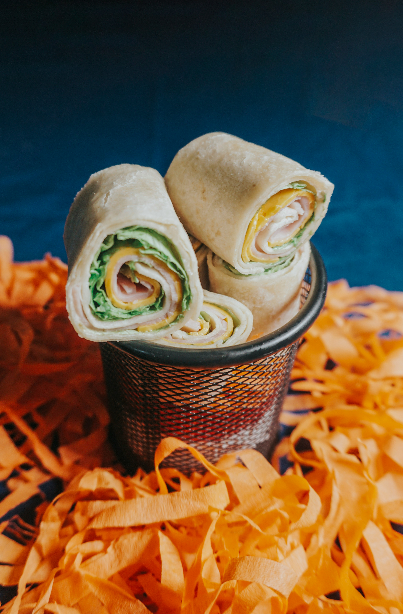

Turkey Roll-Ups
A fun and easy lunch idea that combines lean turkey, cheese, and veggies rolled up in a tortilla. Perfect for kids who love finger foods!
View Recipe
Nutritious and delicious that even the pickiest eaters will love.

A fun and easy lunch idea that combines lean turkey, cheese, and veggies rolled up in a tortilla. Perfect for kids who love finger foods!
View Recipe